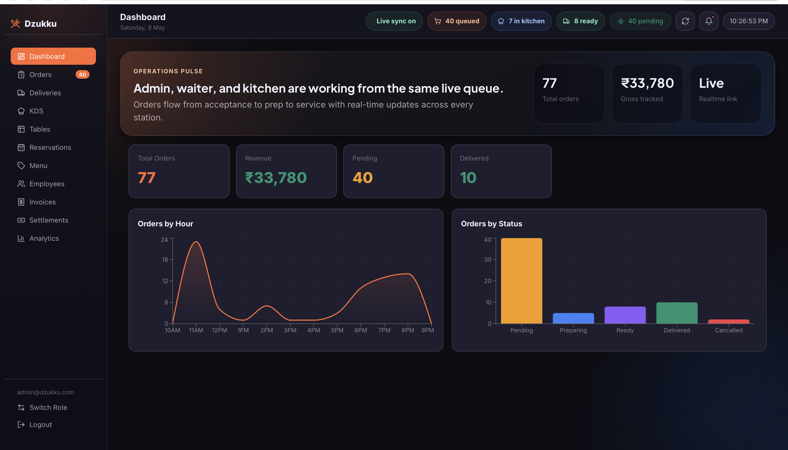
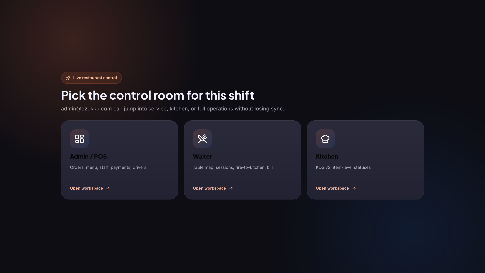
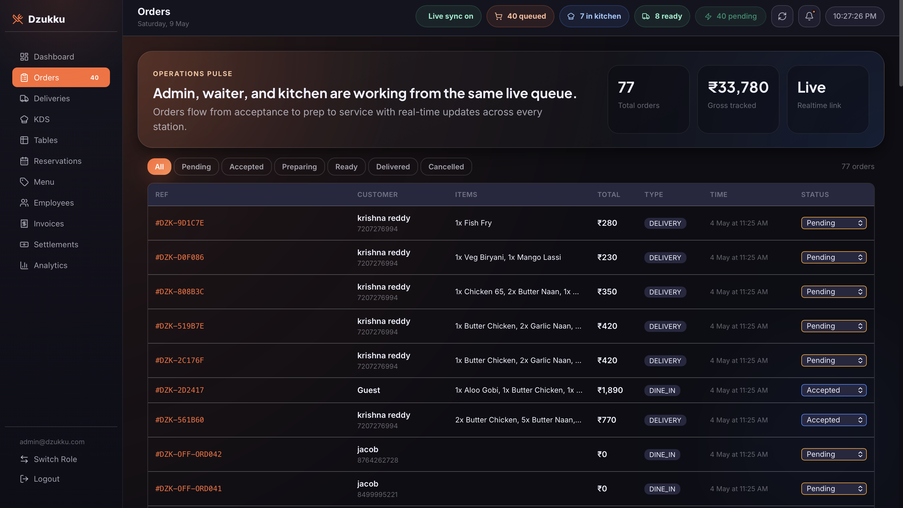
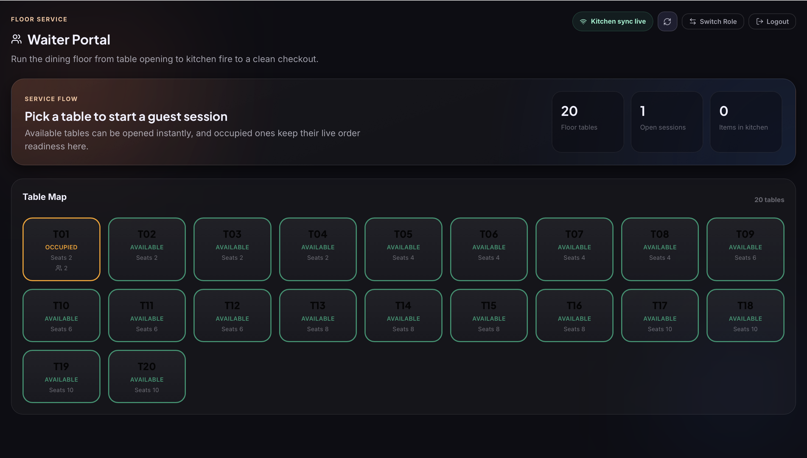
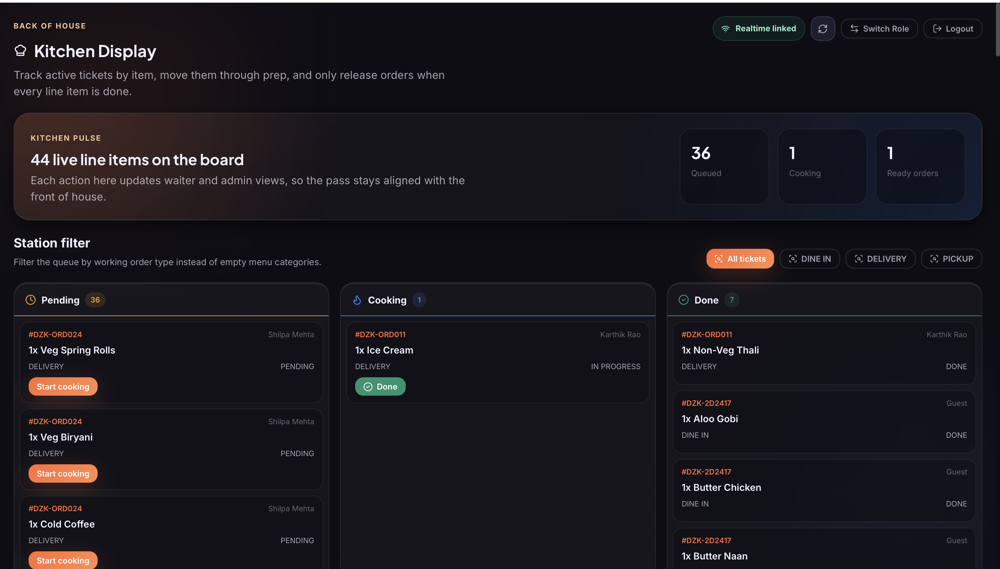
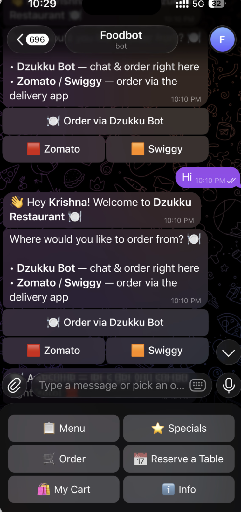
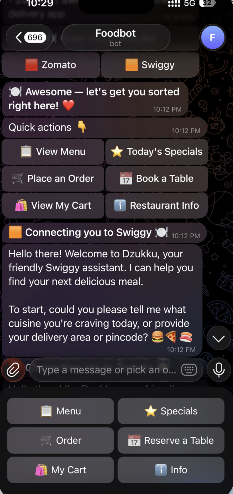
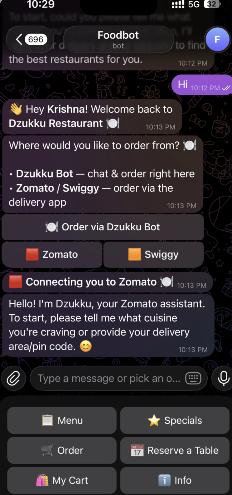

Business Product Brochure
A practical restaurant growth platform that helps businesses accept direct orders, manage staff workflows, coordinate kitchen execution, and understand daily performance from one connected system.

Executive Understanding
Dzukku is an AI-powered restaurant ordering and operations platform. Customers order through chat, while the restaurant team manages orders, kitchen preparation, table service, delivery, invoices, and analytics from a role-based POS workspace.
Through Telegram, WhatsApp-style chat, QR links, and simple buttons such as Menu, Order, Cart, and Reserve.
Admin, waiter, and kitchen teams see the right screen for their role and work from the same order flow.
Daily orders, pending load, revenue, top activity, and operations become visible instead of scattered.
| Business Question | Dzukku Answer |
|---|---|
| Who is it for? | Restaurants, cafes, cloud kitchens, QSRs, food courts, hotels, and multi-branch food businesses. |
| What does it replace? | Scattered ordering over calls, chats, spreadsheets, handwritten tickets, disconnected dashboards, and manual follow-up. |
| Why should a business care? | It can improve direct ordering, service speed, kitchen clarity, customer ownership, reporting, and branch scalability. |
Business Challenge
Restaurants do not only need online ordering. They need an operating system that connects customer demand with kitchen execution and business visibility.
Marketplaces are useful for discovery, but repeat customers often still go through commission-heavy channels.
Orders, tables, reservations, kitchen status, delivery, and billing may live in different tools or staff memory.
Customers do not want another complicated ordering app. They want quick recommendations and simple confirmation.
Owners need to know what is selling, what is delayed, what is pending, and where the business can improve.
Business Outcome
Product Modules
Dzukku is a connected set of business modules, not a single chatbot. Each module maps to a real restaurant workflow.
Conversational menu help, item selection, cart, customer details, confirmation, and channel choice.
Live dashboard for orders, revenue, pending load, kitchen count, invoices, and staff operations.
Pending, cooking, and done stages so the back of house works from a clear queue.
Table map, guest sessions, dine-in orders, kitchen fire, and bill generation.
Chat-based table booking with guest count, date, time, and special request handling.
Driver assignment, status tracking, proof of delivery, and customer progress updates.
Billing, paid status, direct/platform settlement visibility, and daily reconciliation support.
Top dishes, peak hours, revenue patterns, repeat behavior, and operational KPIs.
Separate menus, staff, orders, customers, dashboards, and brand-specific AI assistants by branch.
Staff Operations
A good restaurant system should not overwhelm staff. Dzukku separates work by role so each team sees only the controls they need.

Admin/POS manages full operations. Waiter handles floor service. Kitchen handles preparation. This separation improves adoption and keeps work focused.
Orders, menu, staff, payments, deliveries, invoices, reservations, and analytics.
Table map, active sessions, cart building, kitchen fire, and checkout support.
Item-level KDS queue with pending, cooking, and done status movement.
Management View
The dashboard gives decision-makers a shift-level picture: total orders, revenue, pending work, delivered orders, live sync, kitchen count, and order trends. This helps managers act during the day, not only after closing.
Revenue, order count, peak hours, and demand patterns.
Pending orders, kitchen load, ready orders, and service bottlenecks.
Top dishes, repeat orders, direct channel adoption, and campaign opportunities.
Trackable Work

The orders screen makes work visible: order references, customer names, ordered items, totals, source channel, and current status. This gives the team a shared truth and reduces repeated checking between counter, kitchen, delivery, and management.
Floor And Kitchen

Waiters can open table sessions, see available and occupied tables, manage guests, send orders to kitchen, and complete checkout.

Kitchen staff can move every line item from pending to cooking to done while admin and waiter screens stay aligned.
Staff can answer customer questions because kitchen readiness is visible.
The kitchen gets a structured queue instead of scattered verbal instructions.
Customer Experience
Dzukku is simple for customers because it does not force them to learn a new app. They can chat, tap quick actions, choose direct Dzukku ordering, or use supported delivery channels.

Best for repeat customers, QR ordering, table ordering, packaging links, and social campaigns.

Customers who prefer Swiggy can still be guided through a familiar conversational path.

Dzukku can preserve flexibility while direct ordering remains the preferred repeat-customer path.
Business Value
Restaurants can promote QR and chat ordering to repeat customers instead of depending only on marketplace apps.
Orders, kitchen readiness, table sessions, and delivery status become visible in one workflow.
Customers get quick replies, menu help, simple buttons, clear confirmation, and familiar ordering channels.
Owners can track revenue, pending orders, top dishes, peak hours, service delays, and growth opportunities.
| Business Area | Expected Improvement | How To Measure |
|---|---|---|
| Direct ordering | More orders through restaurant-owned channels. | QR scans, chat starts, completed direct orders. |
| Kitchen execution | Fewer missed items and clearer preparation status. | Prep time, ready time, delayed orders, corrections. |
| Revenue quality | More repeat customers and stronger average order value. | Repeat rate, AOV, add-on acceptance, campaign response. |
| Management control | Better decisions on staffing, menu, offers, and branches. | Peak-hour reports, item sales, status mix, trend dashboards. |
Use Cases
Accept direct chat orders, manage prep queues, coordinate delivery, and track demand patterns.
Manage tables, guest sessions, waiter orders, reservations, kitchen tickets, and bills.
Make menu browsing, combos, pickup orders, and preparation updates faster for regular customers.
Give each branch separate operations while owners compare performance centrally.
Swiggy and Zomato remain useful for new customer discovery. Dzukku is strongest for direct ordering, repeat customers, dine-in operations, restaurant-owned loyalty, and branch-level management.
Rollout Plan
The best rollout is staged. Start small, prove value, train teams, then expand into deeper workflows and multiple branches.
Client Confidence
No. Chat is the customer entry point. The platform also includes POS, KDS, tables, reservations, invoices, delivery workflows, and analytics.
Yes. Staff use role-based screens, so each team sees the workflow that matches their daily responsibilities.
Not necessarily. Aggregators are useful for discovery. Dzukku is best for direct ordering, repeat customers, and restaurant-owned operations.
Yes. The platform can grow into separate menus, staff, customers, orders, dashboards, and AI personalities by branch.
Track direct orders, chat conversion, repeat customers, average order value, kitchen time, cancellations, and customer feedback.
Start with one outlet, one menu, one ordering channel, one dashboard, and one kitchen queue. Expand after the workflow is proven.
Final Recommendation
Dzukku gives food businesses a way to modernize customer ordering and daily operations without making the experience complicated. Customers use chat. Staff use role-based screens. Owners get visibility.
Quick ordering, simple buttons, helpful recommendations, and clear confirmation.
Fewer missed orders, clearer kitchen flow, better table coordination, and less manual communication.
More direct relationships, better margin potential, stronger visibility, and a platform that can scale.
Launch Dzukku for one restaurant, one menu, one direct ordering channel, and one kitchen workflow. Measure direct orders, conversion, preparation time, average order value, and repeat customer behavior. Use those results to decide the next growth phase.